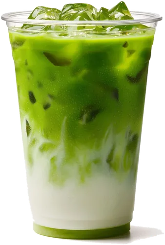

Racikan
Kopi Kami
Dari es kopi susu gula aren andalan sampai V60 seduh manual. Diracik dari biji pilihan, dingin atau hangat, sesuai suasana harimu.
Mulai Rp12.000
Kue &
Roti
Pilihan manis untuk menemani kopimu: brownies cokelat yang pekat, cheesecake lembut, croissant renyah, sampai roti kopi andalan kami.
Spesial
Bulan Ini
Racikan terbatas yang berganti tiap bulan: matcha yang lembut, kopi dengan sentuhan baru, dan kue atau roti hangat sebagai teman minumnya. Cicipi sebelum berganti.

Klik gambar untuk lebih banyak menu spesial bulan ini